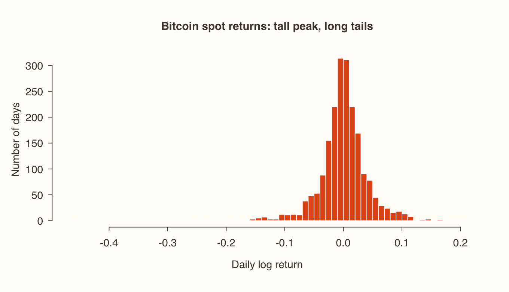
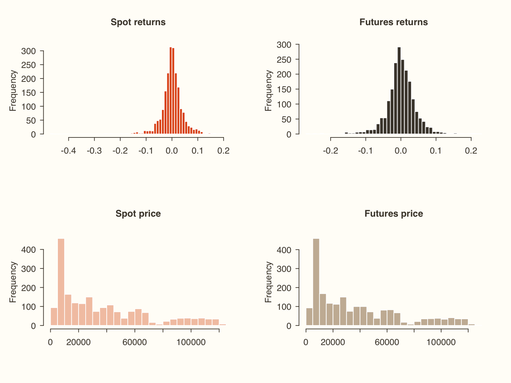
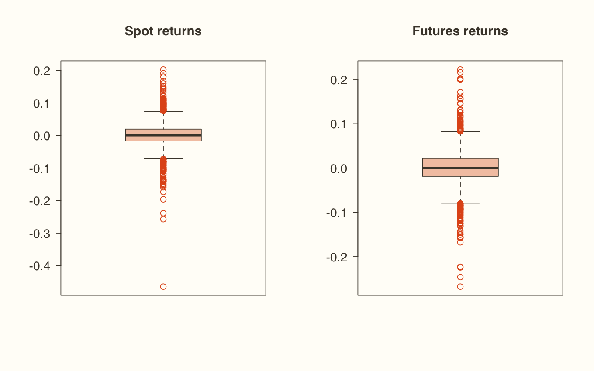
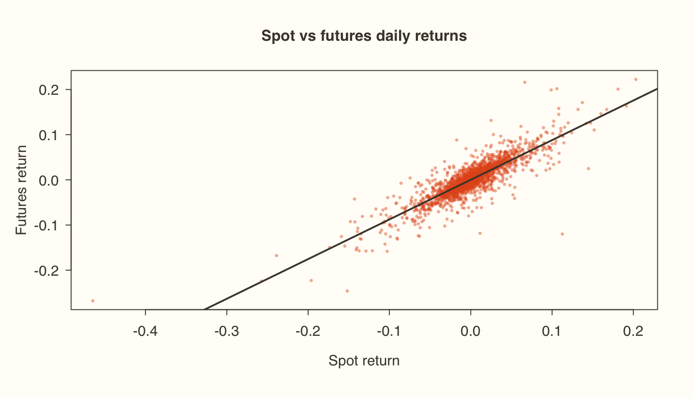
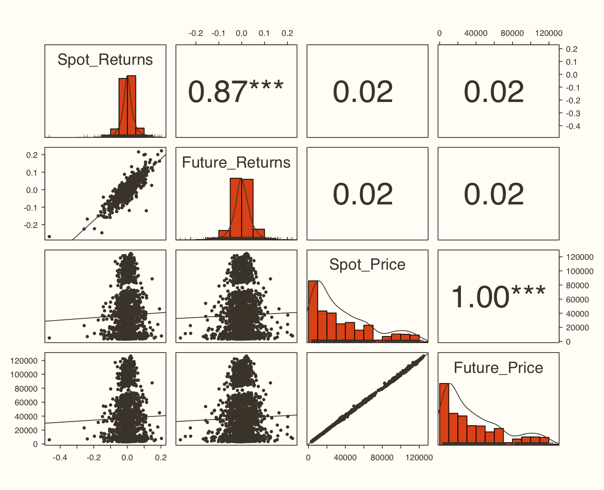
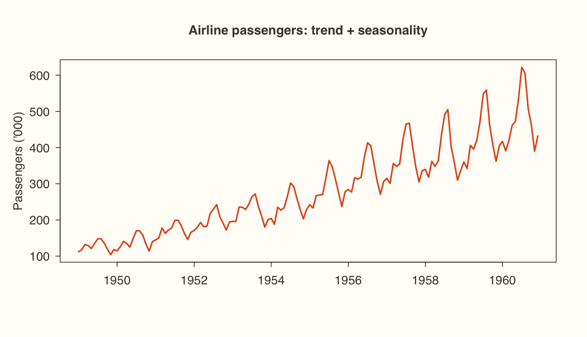
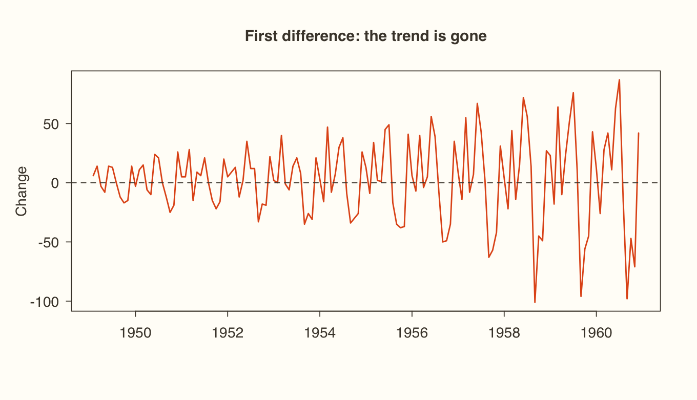

Session 2.1
Descriptive statistics I: centre and spread Before modelling a series, describe it. Statisticians summarise a distribution with four moments :
Moment Question Measures 1st: central tendency What is a typical value? Mean, median, mode 2nd: dispersion How spread out is it? Range, IQR, variance, SD 3rd: skewness Is it symmetric? Skewness 4th: kurtosis How fat are the tails? Kurtosis
Central tendency Mean = Σx / n: the arithmetic average. Use it for interval and ratio data.Median : the middle value of the sorted data, at position (n+1)/2. It isn't dragged around by outliers.Mode : the most frequent value. It's the only valid average for nominal data.R has mean() and median() built in, but no function for the statistical mode, so write a one-line one:
R Copy
x <- c(10, 11, 12, 8, 9)
mean(x)
median(x) # sorted: 8 9 10 11 12, so the middle value is 10
y <- c(20, 30, 25, 30, 40, 30, 35)
mode_stat <- function(v) { t <- table(v); as.numeric(names(t)[which.max(t)]) }
mode_stat(y)Console output
[1] 10
[1] 10
[1] 30 Dispersion Range = max − min. It's simple, but uses only two points.IQR = Q3 − Q1 is the spread of the middle 50%, and it's also the basis of the outlier rule from Module 1.Quartile deviation = (Q3 − Q1) / 2.R Copy
z <- c(4, 9, 2, 6, 1, 12, 3, 8, 9)
range(z)
diff(range(z)) # 12 - 1 = 11
quantile(z, c(0.25, 0.5, 0.75))
IQR(z)
IQR(z) / 2 # quartile deviationConsole output
[1] 1 12
[1] 11
25% 50% 75%
3 6 9
[1] 6
[1] 3 Session 2.2
Descriptive statistics II: risk, skewness and kurtosis Variance and standard deviation Deviations from the mean always sum to zero, so we either take absolute values (mean absolute deviation) or square them (variance). The standard deviation is the square root of the variance. It's back in the original units, which is why finance calls it risk or volatility .
R Copy
r <- c(0.04, -0.01, 0.06, 0.02, -0.03, 0.05, 0.01) # seven monthly returns
sum(r - mean(r)) # always (almost) exactly zero
mean(abs(r - mean(r))) # mean absolute deviation
var(r)
sd(r)Console output
[1] -5.2042e-18
[1] 0.025714
[1] 0.0010667
[1] 0.03266 Watch out R's var() and sd() divide by n − 1 (the sample formula), not by n. With hundreds of daily returns the difference is negligible.
The empirical rule If returns are roughly normal, about 68% fall within mean ± 1 SD, 95% within ± 2 SD and 99.7% within ± 3 SD. A stock with a mean return of 10% and an SD of 4% will usually return between 6% and 14%, and almost always between 2% and 18%.
Coefficient of variation: risk per unit of return CV = SD / mean. A smaller CV means you get return more consistently for the risk you take.
R Copy
stocks <- data.frame(stock = c("A", "B"), mean_ret = c(10, 12), sd_ret = c(6, 7))
stocks$CV <- round(stocks$sd_ret / stocks$mean_ret, 3)
stocksConsole output
stock mean_ret sd_ret CV
1 A 10 6 0.600
2 B 12 7 0.583 How to read it Stock B has the higher risk (7% vs 6%), but its CV is lower (0.583 vs 0.600), so it pays more return per unit of risk.
Skewness and kurtosis Measure Value Meaning for returns Skewness = 0 Symmetric Gains and losses mirror each other Skewness > 0 Long right tail Occasional big gains Skewness < 0 Long left tail Occasional big losses (typical of stocks) Kurtosis = 3 (excess 0) Mesokurtic Normal tails Kurtosis > 3 (excess > 0) Leptokurtic Sharp peak, fat tails , more extreme days Kurtosis < 3 (excess < 0) Platykurtic Flat, thin tails
Watch out Packages disagree on which kurtosis they report. psych::describe() reports excess kurtosis (compare with 0), while moments::kurtosis() reports raw kurtosis (compare with 3).
Session 2.3
Descriptive statistics in R: Bitcoin spot vs futures Now on real data: daily Bitcoin spot prices against CME Bitcoin futures since futures trading began in December 2017. The returns are daily log returns.
R Copy
url <- "https://xploreai.co.in/courses/fda-r/data/"
bitcoin <- read.csv(paste0(url, "bitcoin.csv"))
str(bitcoin)Console output
'data.frame': 2022 obs. of 5 variables:
$ Date : chr "2017-12-19" "2017-12-20" "2017-12-21" "2017-12-22" ...
$ Spot_Returns : num -0.0725 -0.067 -0.0507 -0.1332 0.1518 ...
$ Future_Returns: num -0.0483 -0.0659 -0.1058 -0.0812 0.1104 ...
$ Spot_Price : num 17777 16625 15803 13832 16100 ...
$ Future_Price : num 18200 17040 15330 14135 15785 ... R Copy
mean(bitcoin$Spot_Returns)
sd(bitcoin$Spot_Returns)
range(bitcoin$Spot_Returns)
summary(bitcoin[, -1]) # -1 drops the Date columnConsole output
[1] 0.00075238
[1] 0.041472
[1] -0.46473 0.20305
Spot_Returns Future_Returns Spot_Price Future_Price
Min. :-0.464730 Min. :-0.267726 Min. : 3242 Min. : 3145
1st Qu.:-0.016762 1st Qu.:-0.018683 1st Qu.: 9484 1st Qu.: 9475
Median : 0.000883 Median : 0.000000 Median : 27287 Median : 27338
Mean : 0.000752 Mean : 0.000755 Mean : 37237 Mean : 37309
3rd Qu.: 0.019809 3rd Qu.: 0.021797 3rd Qu.: 57340 3rd Qu.: 57539
Max. : 0.203047 Max. : 0.222358 Max. :124753 Max. :126315 summary() gives no SD, skewness or kurtosis. The psych package's describe() gives all of them at once:
R shown, not run here Copy
install.packages("psych")R Copy
library(psych)
describe(bitcoin[, -1])Console output
vars n mean sd median trimmed mad min max
Spot_Returns 1 2022 0 0.04 0 0 0.03 -0.46 0.20
Future_Returns 2 2022 0 0.04 0 0 0.03 -0.27 0.22
Spot_Price 3 2022 37237 32227.18 27287 32556 28142.74 3242.48 124752.53
Future_Price 4 2022 37309 32335.59 27338 32617 28217.58 3145.00 126315.00
range skew kurtosis se
Spot_Returns 0.67 -0.89 11.21 0.00
Future_Returns 0.49 -0.20 4.78 0.00
Spot_Price 121510.05 0.99 -0.07 716.69
Future_Price 123170.00 0.99 -0.07 719.10 How to read it Mean daily returns are tiny (about 0.075%, so describe() rounds them to 0), but the SD is about 4% a day , which is very risky. Skew is negative for both return series, so crashes are bigger than rallies. Kurtosis (excess) is 11.2 for spot and 4.8 for futures, both far above 0, so the tails are fat: extreme days happen far more often than a normal distribution would predict. The mad, trimmed and se columns are the median absolute deviation, the 10% trimmed mean and the standard error.
Session 2.4
Graphical analysis: histograms, box plots and scatter plots The numbers tell you the shape. Charts show it.
Histogram: the shape of the distribution R Copy
rust <- "#E2571B"; espresso <- "#4A4238"; peach <- "#F3C7B0"
hist(bitcoin$Spot_Returns, breaks = 80, col = rust, border = "white",
xlab = "Daily log return", ylab = "Number of days",
main = "Bitcoin spot returns: tall peak, long tails")Plot output

Four charts at once with par(mfrow) R Copy
par(mfrow = c(2, 2))
hist(bitcoin$Spot_Returns, breaks = 60, col = rust, border = "white", main = "Spot returns", xlab = "")
hist(bitcoin$Future_Returns, breaks = 60, col = espresso, border = "white", main = "Futures returns", xlab = "")
hist(bitcoin$Spot_Price, breaks = 40, col = peach, border = "white", main = "Spot price", xlab = "")
hist(bitcoin$Future_Price, breaks = 40, col = "#C9B8A3", border = "white", main = "Futures price", xlab = "")
par(mfrow = c(1, 1)) # always reset afterwardsPlot output

Box plots: outliers at a glance R Copy
par(mfrow = c(1, 2))
boxplot(bitcoin$Spot_Returns, main = "Spot returns", col = peach, border = espresso, outcol = rust)
boxplot(bitcoin$Future_Returns, main = "Futures returns", col = peach, border = espresso, outcol = rust)
par(mfrow = c(1, 1))Plot output

How to read it Every dot is a day outside the 1.5 × IQR fences. There are dozens on both sides, which fits the high kurtosis from describe().
Scatter plot: do spot and futures move together? R Copy
plot(bitcoin$Spot_Returns, bitcoin$Future_Returns, pch = 16, cex = .5,
col = adjustcolor(rust, .45), xlab = "Spot return", ylab = "Futures return",
main = "Spot vs futures daily returns")
abline(lm(Future_Returns ~ Spot_Returns, data = bitcoin), col = espresso, lwd = 2)Plot output

Everything in one picture: pairs.panels() R Copy
pairs.panels(bitcoin[, -1], hist.col = rust, col = espresso, lm = TRUE, stars = TRUE)Plot output

How to read it The diagonal shows each variable's histogram, the lower triangle the scatter plots and the upper triangle the correlations. Spot and futures prices correlate at about 1.00 and their returns at about 0.9. Returns barely correlate with price levels. Pie and bar charts suit categorical data, so you'll rarely use them on prices.
Session 2.5
Time-series components and stationarity A time series is observed at equally spaced, ordered points in time. It usually mixes four components:
Component What it looks like Example Trend Long-run rise or fall NIFTY since 2015 Seasonality A pattern that repeats every year Car sales peaking at Diwali Cycle Multi-year boom and bust Post-2008 recovery, the COVID crash Noise Random, unpredictable shocks Surprise news
These components make each observation depend on the one before, so the series is non-stationary .
The idea A stationary series has a constant mean and a constant variance over time. Regress one non-stationary series on another and you can get a high R² for a relationship that doesn't exist. This is called a spurious regression . The classic story is a trader whose daily P&L appears to be "explained" by where a fly sits on the wall. Time-series models need stationary data.
The usual fixes are a first difference (Δyₜ = yₜ − yₜ₋₁), a second difference, or a log difference (which gives log returns). The usual tests are:
Test H₀ (null) Stationary if… ADF (Augmented Dickey-Fuller) Unit root, so non-stationary p < 0.05, or the test statistic is below the critical value PP (Phillips-Perron) Unit root, so non-stationary p < 0.05 KPSS Stationary p > 0.05 (the logic is reversed)
Watch out Never decide from a chart alone. A series can look flat and still fail the test. Plot it, then test it.
Session 2.6
Testing stationarity in R The classic airline passengers series (monthly, 1949–1960) has both a trend and seasonality.
Step 1: declare it as a time series A data frame isn't a time series. ts() tells R the start date and the frequency , meaning the number of observations per year: 12 for monthly data, 4 for quarterly, 1 for annual, about 252 for daily trading days.
R Copy
AP <- read.csv(paste0(url, "AirPassengers.csv"))
str(AP)
AP_T <- ts(AP$Passengers, frequency = 12, start = c(1949, 1))
str(AP_T)Console output
'data.frame': 144 obs. of 2 variables:
$ Month : chr "1949-01" "1949-02" "1949-03" "1949-04" ...
$ Passengers: int 112 118 132 129 121 135 148 148 136 119 ...
Time-Series [1:144] from 1949 to 1961: 112 118 132 129 121 135 148 148 136 119 ... R Copy
plot(AP_T, col = rust, lwd = 2, ylab = "Passengers ('000)", xlab = "",
main = "Airline passengers: trend + seasonality")Plot output

Step 2: the ADF test with urca R shown, not run here Copy
install.packages("urca")R Copy
library(urca)
model1 <- ur.df(AP_T, type = "none", lags = 1)
summary(model1)Console output
###############################################
# Augmented Dickey-Fuller Test Unit Root Test #
###############################################
Test regression none
Call:
lm(formula = z.diff ~ z.lag.1 - 1 + z.diff.lag)
Residuals:
Min 1Q Median 3Q Max
-103.76 -16.20 -2.78 24.95 70.69
Coefficients:
Estimate Std. Error t value Pr(>|t|)
z.lag.1 -0.00316 0.00898 -0.35 0.72507
z.diff.lag 0.31160 0.08126 3.83 0.00019 ***
---
Signif. codes: 0 ‘***’ 0.001 ‘**’ 0.01 ‘*’ 0.05 ‘.’ 0.1 ‘ ’ 1
Residual standard error: 32.4 on 140 degrees of freedom
Multiple R-squared: 0.0951, Adjusted R-squared: 0.0821
F-statistic: 7.35 on 2 and 140 DF, p-value: 0.00092
Value of test-statistic is: -0.3524
Critical values for test statistics:
1pct 5pct 10pct
tau1 -2.58 -1.95 -1.62 How to read it Compare the test statistic (the Value of test-statistic line) with the 5pct critical value , which is −1.95 here. The statistic is above the critical value (less negative), so we fail to reject H₀ . The series has a unit root and is non-stationary .
Step 3: difference and test again R Copy
AP_T_D <- diff(AP_T, differences = 1)
head(AP_T_D) # 118-112 = 6, 132-118 = 14, ...
plot(AP_T_D, col = rust, lwd = 1.6, ylab = "Change", xlab = "",
main = "First difference: the trend is gone")
abline(h = 0, col = espresso, lty = 2)
model2 <- ur.df(AP_T_D, type = "none", lags = 1)
summary(model2)@teststat
model2@cvalConsole output
Feb Mar Apr May Jun Jul
1949 6 14 -3 -8 14 13
tau1
statistic -8.6771
1pct 5pct 10pct
tau1 -2.58 -1.95 -1.62 Plot output

How to read it The statistic is now far below −1.95, so we reject H₀ : the differenced series is stationary , and passengers are I(1) (integrated of order 1). The workflow is always declare → plot → test → difference → re-test → model .
Getting a p-value instead tseries gives the same tests as p-values, which are often easier to read:
R Copy
library(tseries)
adf.test(AP_T_D)
kpss.test(AP_T_D)Console output
Warning message:
p-value smaller than printed p-value
Augmented Dickey-Fuller Test
data: AP_T_D
Dickey-Fuller = -7.02, Lag order = 5, p-value = 0.01
alternative hypothesis: stationary
Warning message:
p-value greater than printed p-value
KPSS Test for Level Stationarity
data: AP_T_D
KPSS Level = 0.0146, Truncation lag parameter = 4, p-value = 0.1 Tip Notice the differenced chart still fans out over time: its variance is growing. Taking diff(log(AP_T)) fixes that too, which is why finance works with log returns rather than raw price changes.